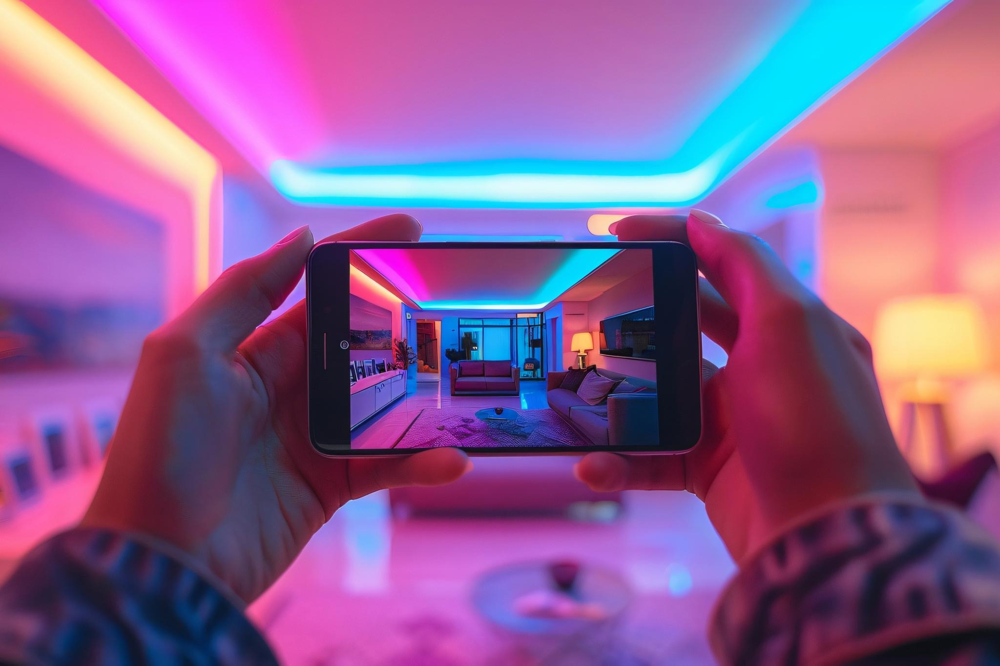
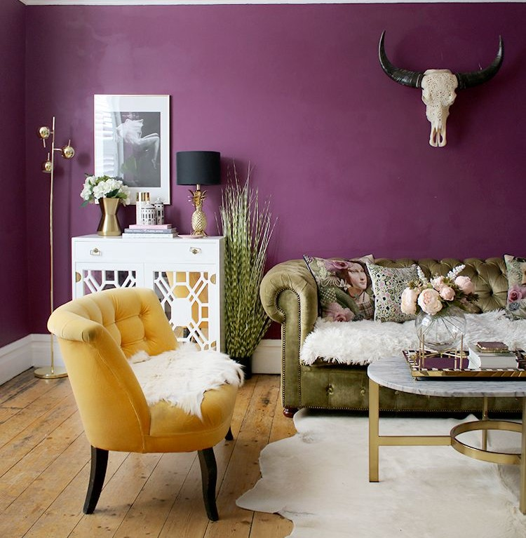

Volatile Organic Compounds (VOCs) are chemicals found in many household products, including paints. When these compounds evaporate into the air, they can contribute to indoor air pollution, posing potential health risks such as headaches, dizziness, and respiratory issues. Moreover, VOCs can have long-term effects on the environment, contributing to smog and ozone layer depletion.
Low-VOC paints are formulated to release fewer volatile organic compounds into the air, making them a safer choice for both your home and health. Here are some key benefits:
By reducing the amount of VOCs emitted, low-VOC paints help maintain better indoor air quality, which is particularly important for children, the elderly, and individuals with respiratory conditions.
Choosing low-VOC paints can minimize the risk of short-term symptoms like headaches and dizziness, as well as long-term health issues related to prolonged exposure to harmful chemicals.
Low-VOC paints contribute less to air pollution and the formation of ground-level ozone, making them a more eco-friendly choice for the environment.

DR Paint PLC is dedicated to promoting sustainability and eco-friendly practices in the paint industry. By offering a wide range of low-VOC paints, DR Paint PLC ensures that you can choose products that are safe for your family and kind to the environment. Their commitment extends beyond just the products; the company also focuses on sustainable manufacturing processes and reducing their overall environmental footprint.
When selecting paints for your home, it's crucial to prioritize
the health and safety of your family.
Opt for low-VOC or zero-VOC paints to ensure a healthier living environment. Look
for
certifications and labels that indicate paint meets stringent environmental and
health
standards. Additionally, consider the following tips:
Ensure proper ventilation during and after painting to disperse any lingering fumes and improve indoor air quality.
Take the time to research and choose reputable brands that are known for their commitment to sustainability and producing non-toxic products.
Consult with professional painters or experts who can guide you in selecting the best low-VOC paints for your specific needs.
Whether you're passionate about eco-friendly innovations, eager to learn about various paint finishes, or looking for tips on smart paint technology, we’ve got something for everyone. Click on the categories below to explore in-depth insights, practical guides, and inspiring ideas.